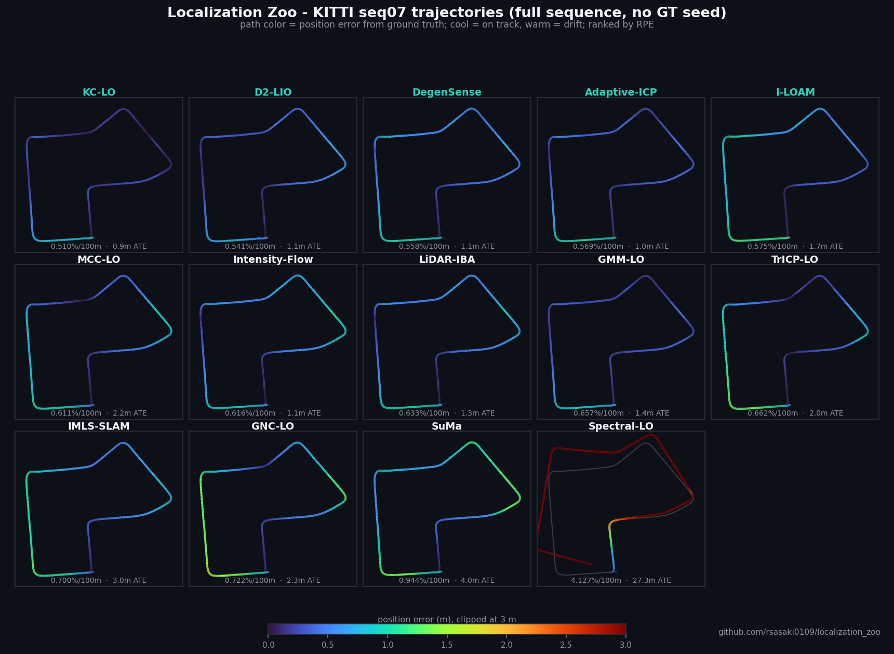

Localization Zoo
C++ implementations of localization papers — LiDAR, LIO, VIO and IMU — behind one API, with honest KITTI benchmarks.

Try it
One command, no build or dataset. It writes report.html and manifest.json to ./zoo-demo/.
docker run --rm -v "$PWD/zoo-demo:/out" ghcr.io/rsasaki0109/localization_zoo:latest
Native build: clone the repo and run bash evaluation/scripts/demo_localization_zoo.sh.
Fixed-configuration KITTI leaderboard
Six explicitly pinned method configurations across sequences 00–10. Official KITTI translational RTE (100–800 m), in %. Lower is better.
Ranked by the unweighted arithmetic mean of all 11 sequence errors, not pooled segment error. Incomplete coverage is unranked. All KITTI sequences have been used during project development; this is a retrospective comparison, not an unseen-test claim. Input preprocessing differs between methods and is part of each fixed configuration.
| Rank | Method / fixed variant | Mean % | Coverage | 00 | 01 | 02 | 03 | 04 | 05 | 06 | 07 | 08 | 09 | 10 |
|---|---|---|---|---|---|---|---|---|---|---|---|---|---|---|
| 1 | Mesh-LOAM paper_odometry_elevation | 0.661 | 11/11 | 0.565 | 0.857 | 0.607 | 0.928 | 0.820 | 0.345 | 0.418 | 0.342 | 0.909 | 0.631 | 0.848 |
| 2 | A-LOAM kitti_default | 0.932 | 11/11 | 0.855 | 2.189 | 1.029 | 0.964 | 0.880 | 0.535 | 0.602 | 0.681 | 0.975 | 0.673 | 0.873 |
| 3 | Quadric-LO dense_profile | 1.049 | 11/11 | 0.966 | 2.060 | 1.176 | 1.236 | 0.680 | 0.588 | 0.560 | 0.662 | 1.128 | 0.933 | 1.556 |
| 4 | LF-GICP paper_default | 1.253 | 11/11 | 0.664 | 1.816 | 1.075 | 0.785 | 0.629 | 0.512 | 0.543 | 0.411 | 1.005 | 0.725 | 5.616 |
| 5 | InTEn-LOAM paper_odometry_plane_check | 2.370 | 11/11 | 0.697 | 16.614 | 3.221 | 0.891 | 0.676 | 0.497 | 0.359 | 0.364 | 0.938 | 0.661 | 1.156 |
| — | L-LO seq07_tuned | — | 10/11 | 1.479 | missing | 4.478 | 3.066 | 2.135 | 1.473 | 1.315 | 1.004 | 1.661 | 4.122 | 4.105 |
Missing = no recorded result; incomplete = wrong frame count; failed = unsuccessful run; metric missing = official RTE unavailable. Large errors remain in the mean. Historical results are not a fresh rerun of current code.
Mesh-LOAM — configuration and selection history
Selection / calibration sequences: 00, 07.
--mesh-loam-paper-odometry uses the paper input and nearest-facet association with an explicit 0.22 deg KITTI elevation correction, not specified by the paper. paper_odometry_elevation is unchanged across 00-10: geometric mean 1.28x, rather than the historical 1.08x on 00/07 alone. Both 00/07 influenced development; the added sequences did not influence the setting. No sequence exceeds twice its paper value. The correction remains opt-in and defaults are unchanged.
Method evidence and limitations
--no-gt-seed --mesh-loam-paper-odometry --input-vertical-angle-correction-deg 0.22A-LOAM — configuration and selection history
Selection / calibration sequences: 07.
Full-sequence official KITTI RTE on 00-10, variant kitti_default, geometric mean 1.07x. kitti_default was the accuracy candidate in the existing sequence 07 profile comparison (lowest stored 100 m RPE and official RTE there). Its arguments are frozen; the added sequences do not select a profile. No sequence exceeds twice its paper value with the fixed setting. The method README includes all per-sequence values and saved-pose drift diagnostics. Defaults and historical results are unchanged.
Method evidence and limitations
--aloam-kitti-profileQuadric-LO — configuration and selection history
Selection / calibration sequences: 00, 07.
Full-sequence official KITTI RTE on 00-10, variant dense_profile, geometric mean 0.85x. The existing dense profile is frozen from the 00/07 paper comparisons; both are treated as development data. No correction or parameter is selected on the added sequences. No sequence exceeds twice its paper value with the fixed setting. The method README includes all per-sequence values and saved-pose drift diagnostics. Defaults and historical results are unchanged.
Method evidence and limitations
--no-gt-seed --quadric-lo-dense-profileLF-GICP — configuration and selection history
Selection / calibration sequences: 00, 02, 08.
Full-sequence official KITTI RTE on 00-10, variant paper_default, geometric mean 1.12x. field beta 0.25 was calibrated on sequence 00 first 500 frames against the paper dilution range, after earlier 02/08 runs exposed excessive gating. Those sequences influenced the decision to recalibrate; no added sequence influences the frozen setting. Seq 10: 5.616 % vs 0.837 % (6.71x), 26 moving steps with length error >20 % and 34 with local vector error >20 %. The method README includes all per-sequence values and saved-pose drift diagnostics. Defaults and historical results are unchanged.
Method evidence and limitations
(recorded native defaults)InTEn-LOAM — configuration and selection history
Selection / calibration sequences: 00, 07.
--inten-loam-paper-odometry uses FEF, S2S re-association, S2M on a temporal-voxel-filtered keyframe map, DOR map-insertion gating and a B-spline intensity residual. The fixed paper_odometry_plane_check variant explicitly uses s2m_plane_max_dist=0.05 and a 0.17 deg correction on all 00-10 sequences: geometric mean 2.19x. These KITTI choices were selected on 07 windows, with diagnosis of 00 frames 4000-4399 suggesting the plane check; 00 is not fully held out. The added sequences are evaluation only. Defaults and stored ablations are unchanged.
Method evidence and limitations
--no-gt-seed --inten-loam-paper-odometry --input-max-range-m 120 --input-vertical-angle-correction-deg 0.17 --inten-loam-paper-set s2m_plane_max_dist=0.05L-LO — configuration and selection history
Selection / calibration sequences: 07.
Full-sequence official KITTI RTE on 00/02-10 (01 is NA in the paper), variant seq07_tuned, geometric mean 1.57x. cluster_cell=0.25, ground_tolerance=0.15 and max_range=80 were selected by the existing 100 m RPE sweeps on sequence 07 and previously transferred unchanged to 00/02/05/08. Sequence 01 is NA in the paper and excluded. Seq 09: 4.122 % vs 1.890 % (2.18x), 4 moving steps with length error >20 % and 9 with local vector error >20 %. Seq 10: 4.105 % vs 1.900 % (2.16x), 7 moving steps with length error >20 % and 17 with local vector error >20 %. The method README includes all per-sequence values and saved-pose drift diagnostics. Defaults and historical results are unchanged.
Method evidence and limitations
--l-lo-set cluster_cell=0.25 --l-lo-set ground_tolerance=0.15 --l-lo-set max_range=80Download results and provenance (JSON) · Pinned configurations and sources
KITTI leaderboard — best variant per sequence
Best variant selected separately for each sequence; an optimistic comparison. Full sequences, odometry only. RPE drift in % per 100 m (lower is better); ATE in grey.
| Method | Seq 00 | Seq 02 | Seq 05 | Seq 07 | Seq 08 |
|---|---|---|---|---|---|
| SuMa | 0.82% 8 m | 0.91% 17 m | 0.42% 3 m | 0.42% 1 m | 1.30% 24 m |
| LF-GICP | 0.82% 9 m | 0.89% 33 m | 0.51% 6 m | 0.54% 1 m | 1.35% 16 m |
| LeGO-LOAM | 0.84% 13 m | 0.88% 42 m | 0.56% 6 m | 0.53% 3 m | 1.38% 18 m |
| A-LOAM | 0.89% 12 m | 0.92% 50 m | 0.53% 5 m | 0.61% 3 m | 1.39% 18 m |
| KISS-ICP | 0.87% 14 m | 0.92% 35 m | 0.67% 5 m | 0.60% 1 m | 1.33% 22 m |
| F-LOAM | 0.92% 10 m | 0.94% 52 m | 0.54% 6 m | 0.61% 3 m | 1.40% 20 m |
| CT-ICP | 0.96% 12 m | 0.97% 46 m | 0.71% 6 m | 0.70% 2 m | 1.34% 31 m |
| MULLS | 0.98% 16 m | 1.02% 47 m | 0.78% 7 m | 0.73% 2 m | 1.32% 30 m |
| L-LO | 1.54% 16 m | 3.97% 142 m | 1.59% 15 m | 1.17% 3 m | 2.05% 36 m |
Methods that need a ground-truth pose as their initial guess are not ranked. More tables and the official KITTI metric are in the README.